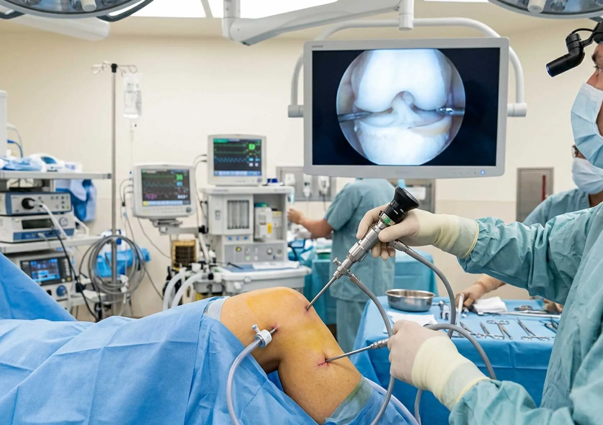

Arthroscopy Systems
أنظمة الناظور الجراحي المتكاملة
نقدم أحدث جيل من أبراج المناظير الجراحية من شركة Arthrex العالمية، تتميز بدقة 4K فائقة الوضوح، لتوفير رؤية مثالية للجراحين وضمان دقة متناهية في العمليات الجراحية المعقدة.

المنظار Arthroscopy
Arthroscopy هي تقنية حديثة تُستخدم لفحص المفاصل وعلاجها عن طريق إدخال كاميرا صغيرة وأدوات دقيقة من خلال فتحات لا تتجاوز 1 سم مما يسمح له بإجراء العمليات الجراحية بشكل أكثر دقة وأقل تدخلاً. تُستخدم هذه التقنية في العديد من العمليات التي تتطلب التدخل في الأعضاء الداخلية دون الحاجة إلى شقوق كبيرة، مما يقلل من الألم ويعجل بالتعافي. تُعد بديلاً آمنًا وفعّالًا للجراحات التقليدية، وتُستخدم على نطاق واسع في علاج العديد من مشاكل العظام والمفاصل.
مميزات الجراحة بالمنظار Arthroscopy
- 1- ألم أقل بعد الجراحة: بفضل الفتحات الصغيرة المستخدمة في الجراحة بالمنظار، يشعر المريض بألم أقل بكثير مقارنة بالجراحة التقليدية، مما يقلل من الحاجة لاستخدام المسكنات لأنها فتحات صغيرة (بدون جرح كبير).
- 2- فترة تعافي أسرع من الجراحة المفتوحة: بسبب تقليل حجم الفتحات الجراحية، يتمكن المرضى من العودة إلى حياتهم اليومية بشكل أسرع، وقد لا يحتاج البعض إلى البقاء في المستشفى أكثر من يوم واحد.
- 3- مضاعفات أقل: مع استخدام المنظار، يكون سبب في تقليل خطر العدوى أو المضاعفات، مما يجعل العملية أكثر أمانًا من العمليات الجراحية التقليدية.
- 4- نتائج دقيقة بفضل الكاميرا عالية الوضوح: يتيح المنظار للجراح رؤية الأنسجة الداخلية بوضوح شديد، مما يساعده على إجراء العمليات بدقة عالية.
- 5- ندوب أصغر: نظرًا استخدام فتحات صغيرة بدلاً من الشقوق الكبيرة، تكون الندوب الناتجة عن الجراحة أصغر وأقل وضوحًا.
هل لديك استفسار عن هذا النظام؟
فريقنا المتخصص مستعد لتقديم كافة المعلومات الفنية والعروض التجارية الخاصة بأنظمة Arthrex.